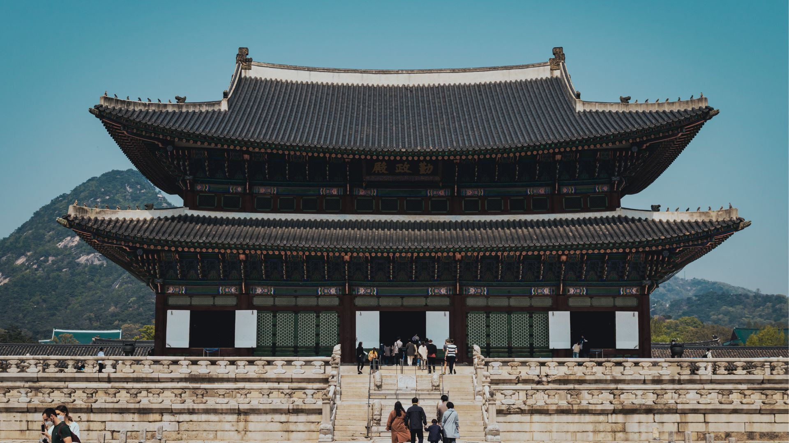
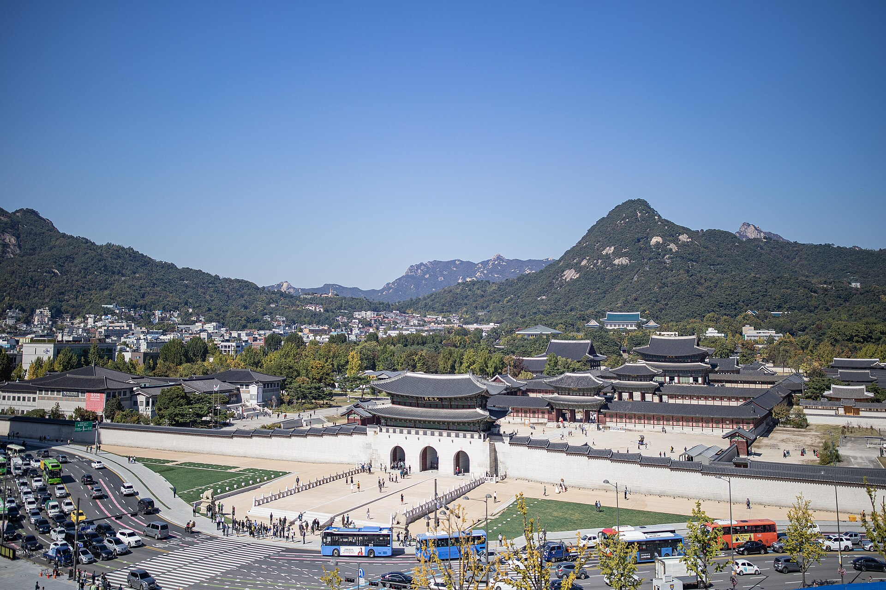
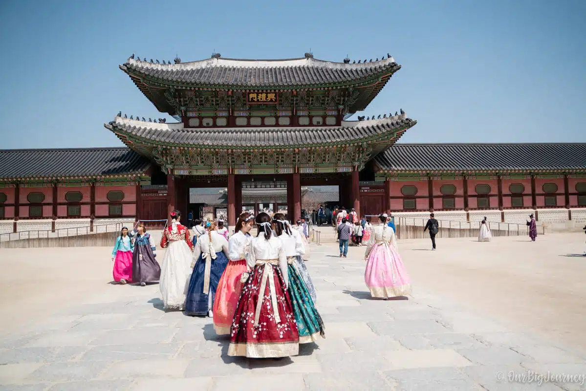
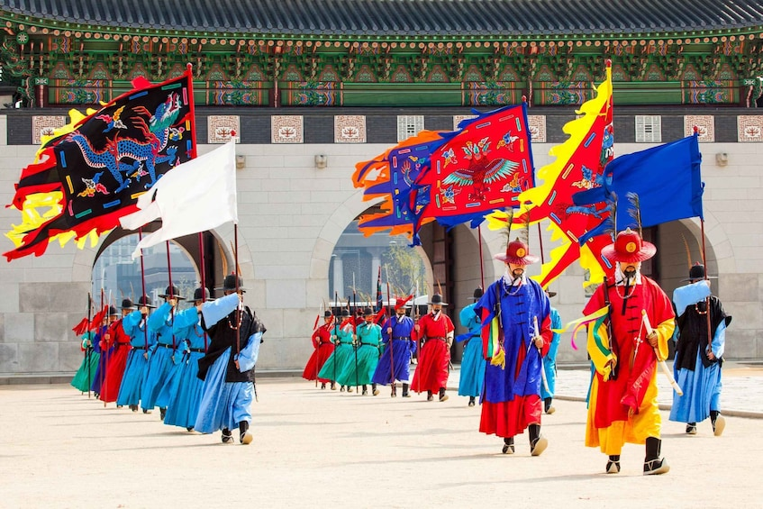

Gyeongbokgung Palace หรือที่เรียกกันว่า Gyeongbokgung (경복궁) เป็นพระราชวังที่มีชื่อเสียงที่สุดในกรุงโซล ประเทศเกาหลีใต้ ตั้งอยู่ในเขตแขวงสาม성 (Samseong-dong) ซึ่งเป็นหนึ่งในสถานที่ท่องเที่ยวสำคัญของเมืองโซล พระราชวังนี้มีประวัติศาสตร์ยาวนานกว่า 500 ปี และเป็นสถานที่ที่แสดงให้เห็นถึงวัฒนธรรมและสถาปัตยกรรมของราชวงศ์โจงกิ๋น (Joseon Dynasty) โดยเฉพาะช่วงเย็นและกลางคืนที่แสงไฟทั่วเมืองสวยมาก เหมาะทั้งสำหรับการเที่ยวกับเพื่อน คู่รัก หรือถ่ายรูปสไตล์เกาหลี
พระราชวังเคียงบก (Gyeongbokgung Palace) สร้างขึ้นในปี ค.ศ. 1394 หรือก็คือในยุคสมัยของราชวงศ์โชซอนนั่นเอง โดยพระราชวังแห่งนี้ได้กลายมาเป็นที่ประทับหลัก เพื่อการว่าราชการของกษัตริย์และเหล่าเชื้อพระวงศ์ของเกาหลี พร้อมมีการต่อเติมให้ใหญ่มากยิ่งขึ้น แต่ก็มีบางส่วนที่ได้รับความเสียหายในสงครามเกาหลี-ญี่ปุ่นเช่นกัน ในปี ค.ศ. 1997 พระราชวังเคียงบกได้รับการขึ้นทะเบียนเป็นมรดกโลกทางวัฒนธรรมโดยองค์การ UNESCO อีกด้วย

ที่ตั้งของพระราชวังเคียงบกนั้นสามารถเห็นได้อย่างง่ายดาย เพราะอยู่ใจกลางย่านประวัติศาสตร์ของกรุงโซล หรือก็คือย่านจงโน (Jongno-gu) นั่นเอง โดยรอบๆ พระราชวังเคียงบกยังมีจุดเช็กอินมากมาย ไม่ว่าจะเป็นพิพิธภัณฑ์พื้นบ้านแห่งชาติเกาหลี อนุสาวรีย์กษัตริย์เซจง หรือคลองชองกเยชอน เป็นต้น
สิ่งที่น่าสนใจในพระราชวังเคียงบกนั้นมีมากมาย ไม่ว่าจะเป็นการชมสถาปัตยกรรมที่งดงามของพระราชวัง การเข้าชมพิพิธภัณฑ์ที่จัดแสดงเกี่ยวกับประวัติศาสตร์และวัฒนธรรมเกาหลี หรือการเข้าร่วมกิจกรรมต่างๆ ที่จัดขึ้นในบริเวณพระราชวัง เช่น การแต่งชุดฮันบกเยี่ยมชมพระราชวัง พิธีเปลี่ยนเวรยามพระราชวังเคียงบก และอื่นๆ อีกมากมาย


พิธีเปลี่ยนเวรยามพระราชวังเคียงบกถือเป็นอีกหนึ่งไฮไลต์ที่ห้ามพลาดโดยเด็ดขาด โดยพิธีนี้มีให้ชมทุกวัน ยกเว้น วันจันทร์
ทั้งหมด 3 เวลา คือ 11.00, 14.00 และ 15.30 น. บริเวณหน้าประตูควังฮวามุน
การเดินทางไปยังพระราชวังเคียงบกนั้นสะดวกสบายมากๆ เพราะสามารถใช้บริการรถไฟใต้ดินได้ โดยสถานีที่ใกล้ที่สุด
คือสถานี Gyeongbokgung Station (สาย 3) ซึ่งอยู่ห่างจากพระราชวังเพียงไม่กี่ร้อยเมตรเท่านั้น นอกจากนี้ยังสามารถใช้บริการ
รถไฟสาย 3 ลงที่สถานี Gyeongbokgung (Exit 5) จากนั้นเดินอีกเล็กน้อย ก็จะถึงทางเข้าพระราชวัง
รถไฟสาย 5 ลงที่สถานี Gwanghwamun (Exit 2) แต่สถานีนี้จะอยู่ห่างกว่าสถานี Gyeongbokgung
สาย : 171 , 272, 708 , 7025 เพื่อมาลงที่ป้าย Gyeongbokgung
สาย : 1020, 1021, 1022, 1023 เพื่อมาลงที่ป้าย Gwanghwamun เดินต่ออีกนิดหน่อย
สะดวกที่สุด แต่ช่วงเย็นอาจมีรถติดเล็กน้อย